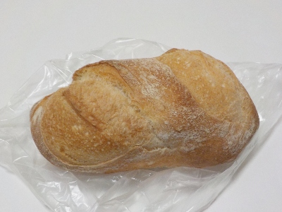
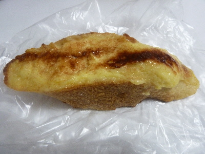
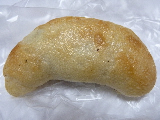
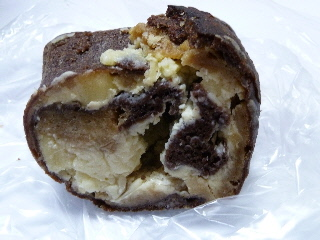
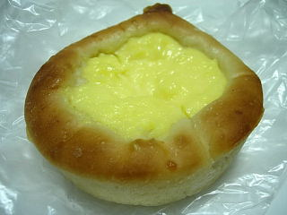
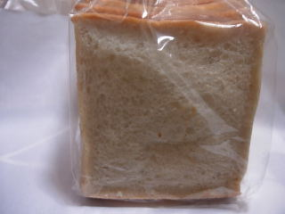

空のクッペ180円
2025/03/02

このごろ固いパンを噛みしめながら味を楽しむのが好きです。
良い具材だとか調味料で味をつけるのもいいですが、それだとパンの味があまりしないんですよね。
シンプルな味のパンは美味しいなと思いながら食べました。
島根県松江市袖師町10-11
2025/03/02

このごろ固いパンを噛みしめながら味を楽しむのが好きです。
良い具材だとか調味料で味をつけるのもいいですが、それだとパンの味があまりしないんですよね。
シンプルな味のパンは美味しいなと思いながら食べました。
2017/10/15
フレンチトーストですが、パンの上に具が乗っています。

パンにしみ込ませる卵が上に乗ってるみたいですね。
その上にはシナモンが多めに乗っていました。
シナモン味が強いので、なにか新しいスイーツっぽかったです。
ちょっと変わったフレンチトーストですが、これはこれで美味しいって思いました。
2013/08/11
島根県立美術館の帰りにパン屋さんに寄りました。

オリーブのパンを買いました。
もっちり感のあるパンに、よーく味が浸かったオリーブの実が入っていました。
オリーブの実って美味しいですよね。
たまに食べたくなります。
パン屋さん空のティラミス風ロールです。

チーズが沢山入っていて、コクが強くて美味しかったです。
チーズ味がしっかりありながらも、甘くて美味しいっていいですね。ティラミスらしくていい商品だなっておもいました。
また見つけたらだぶん買います。
2009/8/9
クリームが中に入ったんじゃないタイプのクリームパンです。

しっとりとして柔らかいクリームの食感がいいですね。パンもちょっとしっとりとしていて、バランスがよく、美味しくいただけました。いい菓子パンですね。
2008/07/05
クリームが中に入ったんじゃないタイプのクリームパンです。

クセがないあっさりとした食パンでした。トーストしないで食べたんですが、ふんわりしっとりしていたのでサンドイッチとかにして食べると美味しいかな？って思いました。
2007/3/10
ここのお店は初めて行きました。
昔ながらのタイプのメロンパンを食べたんですが、クッキー生地のところの量が多いので、持った感じがガッチリしてて重かったです。
クッキー部分が多いので、パン部分の味はあまり感じられなかったです。
食べてるとバターのいい香がして、食欲をそそりました。メロンパンとクッキーの中間な感じで、食感も味もふんわり軽いクッキーを沢山食べれて、ちょっと幸せな気分になりました。
ちょっと王道じゃないですが、これはなかなかいいお菓子ですね。
今度は普通にパンを食べてみたいです。